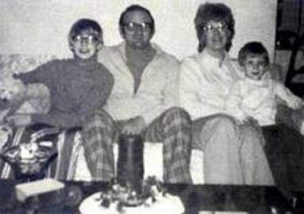
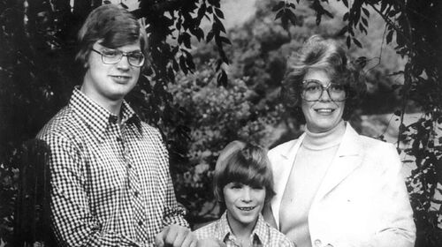

JEFFREY DAHMER
FAMILIA
-


- 
Lionel Dahmer/ El padre de Jeffrey Dahmer escribió un libro donde cuenta cómo fue la crianza del asesino, titulado “La historia de un padre”. En la publicación, Lionel Dahmer no defiende al criminal, sino describe sus primeros años con la intención de entender qué salió mal con su hijo. A la fecha, y con 86 años, Lionel reside en Ohio, totalmente alejado del terror que sembró su hijo desde el año 2020. El químico de profesión decidió no hacer más declaraciones sobre los crímenes de “Jef”, ni siquiera cuando se estrenó la serie de Netflix. Todavía está casado con su segunda esposa, Shari, hoy de 80 años.Joyce Flint Joyce Flint/ fue la madre de Jeffrey Dahmer. Ella murió en el año 2000 por un cáncer de mama. Sobre su vida se sabe que se separó de Lionel en los 70 y que tras la muerte de su hijo en prisión, buscó que su cerebro sea donado a la ciencia para que pueda investigarse y encontrarse alguna causa detrás de las brutales acciones del caníbal. Sin embargo, su exesposo se opuso y un juez ratificó su posición, ordenando su cremación. David Dahmer/ Mientras que David Dahmer es el hermano menor de Jeffrey y se cambió de nombre tras el arresto y conocimiento público de los asesinatos del “Carnicero de Milwaukee”. Hasta hoy, se desconoce su nueva identidad. Ha preferido mantenerse en reserva. Su padre y su madrastra Shari Dahmer, en una entrevista con Larry King en 2004, contaron que David tenía una carrera y esperaba un segundo bebé en ese entonces. En 2022, el hermano de Jeffrey tendría 56 años de edad.